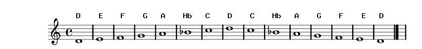

Гамма Ре-минор, натуральный: D E F G A Hb C# D D C# Hb A G F E D  D E F G A Hb C D Играйте звуки прямо по рисунку, сперва сверху вниз, потом снизу вверх. Обратите внимание, что звуки выше Hb играются во второй октаве. Т.е. надо дуть сильнее.